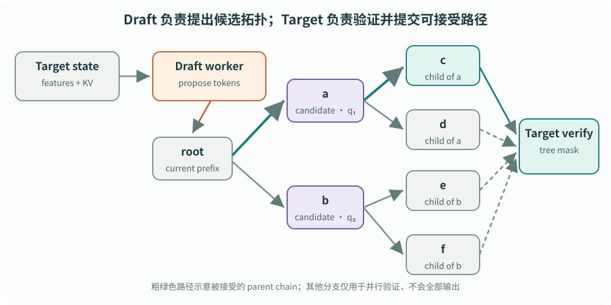
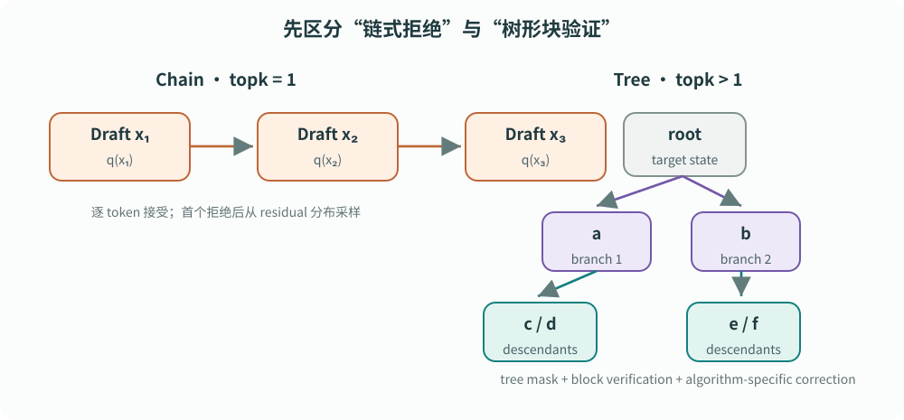

第 10 章 · 推测解码
EAGLE 与 Speculative Decoding：Draft Tree、Target Verify 和精确修正
把候选生成、并行验证和概率修正分开，理解链式拒绝采样与树形 block verification 的差别。
自回归 Decode 的每个 token 都依赖前一个 token，target model 因而需要反复执行。Speculative decoding 的想法是先用更便宜的方式提出多个候选，再让 target model 一次评估多步候选。如果候选大多正确，就能减少串行 target calls；如果不正确，则必须有严格的接受/修正规则，避免改变目标模型的输出分布。
读完本章，你应该能
- 区分 draft proposal、target verification 和 accepted-prefix commit。
- 理解 EAGLE 的候选树 topology 与 target tree mask。
- 推导标准链式 speculative sampling 的接受率与 residual distribution。
- 解释 SGLang 中 token-wise rejection 与 block verification 的配置边界。
1. 先看串行 Decode 的成本在哪里
标准 autoregressive decoding 每轮根据已生成上下文运行 target model 得到下一个 token。若希望生成 K 个 token，通常要执行多个串行 target steps。Speculative decoding 引入 draft proposal：先由更便宜的模型/预测头提出若干候选，再由 target model 对候选进行并行评估。关键不是“猜对了就直接用”，而是验证和修正必须符合算法定义。
经典工作 Fast Inference from Transformers via Speculative Decoding 给出分布保持的 speculative sampling 框架；EAGLE-2 与 EAGLE-3 则进一步探索 feature-level drafting 与候选树构造。
2. EAGLE：草稿不一定是一条直线，可以是一棵树
当前 SGLang speculative 文档列出 EAGLE-2、EAGLE-3、MTP、UNO、DFlash、Standalone 和 NGRAM 等方法。本章聚焦 EAGLE。EAGLE-2 使用上下文相关的动态候选树；EAGLE-3 通过多层特征融合和直接 token prediction 改进 draft generation。它们不是简单地“把 target model 缩小一份”。

具体算法细节见 EAGLE-2、EAGLE-3；运行时能力与配置以 SGLang speculative decoding 文档 为准。
3. Target Verification：为什么能一次评估多个候选？
候选树包含 parent relation：每个节点的上下文由其祖先路径决定。Target verification 使用 tree mask 限制每个候选位置能看到哪些祖先 token，使一次 target forward 可以对多条候选路径进行评估。随后 verifier 选择符合算法规则的接受路径，并将相应 token/KV 状态提交到下一轮。
这并不意味着树中所有分支都成为最终输出。未接受分支的 KV/候选状态需要按运行时规则处理；被接受的路径才继续成为请求上下文。SGLang 的 EagleDraftWorker.draft() 产生 parent_list、候选 token 和相关分数，再构造 verify input；EAGLEWorkerV2.verify() 调用实际 verifier 路径。
4. 链式 speculative sampling：接受概率
对单条 draft chain，设 draft 分布为 q(x)，target 分布为 p(x)。从 q 采样得到候选 x 后，标准接受概率为：
若被拒绝，不能简单地重新从 target 分布采一个 token，否则会破坏精确分布。应从 residual distribution 采样：
这两条式子描述经典 token-wise chain verification。它们不能不加说明地当作 EAGLE top-k tree 的完整验证算法；树形 block verification 有自己的候选前缀检查与修正过程。
5. 一个可以手算的拒绝例子
设词表只有 A/B 两个 token。target 分布 p=(0.6,0.4)，draft 分布 q=(0.4,0.6)，draft 提议 B。则接受率为 min(1,0.4/0.6)=2/3。若随机数 u=0.8，则拒绝；residual 权重为 max(p-q,0)=(0.2,0)，归一化后必然采样 A。
该例说明拒绝后如何恢复 target 分布，而不是展示一个实测接受率。可运行 examples/speculative_sampling.py，使用 Fraction 精确表示概率，避免浮点误差掩盖逻辑。
6. SGLang 的 EAGLE 执行路径
当前 draft() 准备 draft input，运行 draft forward，得到候选 tokens 与 parent topology，并调用 build_eagle_verify_input()。之后 target verify 使用 tree topology、mask 与候选信息执行验证。最终路径由 verifier 决定，而不是由 draft worker 单方面决定。
运行参数包括 --speculative-num-steps、--speculative-eagle-topk、--speculative-num-draft-tokens 和 draft model path 等。它们共同影响树深度、分支数、并行验证容量与内存成本；当前官方文档建议要么让三个关键容量参数自动调优，要么在调参时显式一起设置。默认值和支持组合可能随模型变化。
7. Token-wise Rejection 与 Block Verification 不能混为一谈
SGLang 文档明确区分两种路径：
- Token-wise rejection sampling：逐 token 验证，遇到第一个拒绝就停止当前链；当前配置要求 chain draft，即
--speculative-eagle-topk 1。 - Block verification：对候选前缀进行块级检查，可以在前面某个 prefix 被拒绝后仍检查后续前缀，并使用对应 correction distribution。当前文档说明它适用于特定 EAGLE/EAGLE3/NEXTN stochastic 路径和部分 DFlash 家族组合。

具体支持范围应查看 参数表 与 Block verification 说明，不要只根据参数名字猜测兼容性。
8. 交互：一次 draft 之后发生什么？
下面用单条链说明接受、拒绝和修正；树形 block verification 需要看上一节的第二张图。
Token-wise speculative sampling
Draft proposal：Draft model 从 q 产生候选 token；此时它只是提议，不是最终输出。
Target accepts：Target 计算 p；若随机数落在接受区间，候选 token 被接受，继续验证下一步。
Target rejects：若被拒绝，则从 residual distribution 采样 correction token；链在这里停止并从修正后的上下文继续。
9. 加速条件与失败模式
推测解码只有在候选接受足够多、draft 计算开销可控、target verification 能有效并行时才可能提升端到端性能。低接受率会造成额外 draft/verify 开销；分支数过大增加 KV、metadata 和并行验证成本；长输出、短输出和不同采样温度也会改变收益。
公平 benchmark 至少报告 target-only baseline、draft/target 模型版本、硬件、并发、输入输出长度分布、接受长度分布、tokens/s、ITL/TPOT、P95/P99 和显存。SGLang 官方文档中的性能表属于其指定模型/硬件/MT Bench 条件，不能泛化成所有工作负载的 speedup。
本章没有运行 GPU benchmark。下一步可以继续深入 MTP、DFlash、NGRAM 与 speculative overlap scheduler，但应先把本章的 EAGLE tree 与验证正确性吃透。
参考资料与版本边界
实现级描述以 sgl-project/sglang@6a4e10a0ee643dfbe5f59a98b60293bc11fc1bdd 为快照（2026-11-23 核查）。源码 main 后续会变化；新版本需要重新核对调用路径、默认配置和兼容矩阵。图中页号、chunk 数值和概率向量均为 toy/derived，不是性能测量。